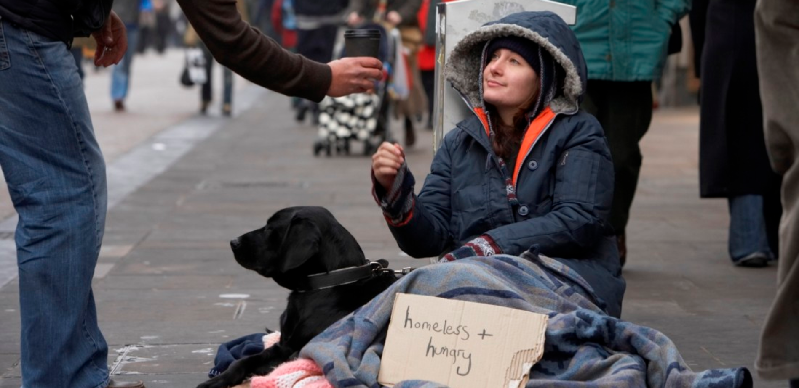

There are many ways to help reduce homelessness in the world and providing resources is one of the most important. Here are some solutions that you as a community can do to help the homeless:
- Volunteering at places that help homeless people
- Spreading awareness via social media and other media outlets
- Donating to homeless
- Donations and sponsoring at big organizations that will help homelessness
- Reaching out to health care workers, housing providers, and more people that offer oppurtunites to the homeless
- Business owners creating low-income jobs that ensure job development and training strategies for homeless people
Solving homelessness will help decrease danger on the streets, lower crime rates, and more.
Visit this website to learn more:
-USICH-Solutions